LSD Analysis of Results
|
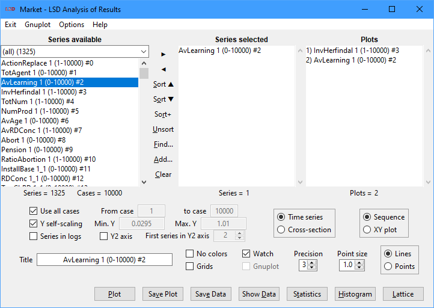 |
a. Plot window 2. List boxes 5. Plot format d. 3D plots 7. Menu |
The LSD Analysis of Results module offers tools to analyze the data produced during a simulation run in a variety of formats, including methods for exporting data to be used with other data analysis software. Simulation results data is saved according to the model configuration which indicates the time series, for Variables or Parameters, to be saved (more details here). The tools in this module are designed for first level data analysis. More sophisticated analysis is supposed to be performed in advanced statistical software packages, like R, which are fully supported by LSD.
Quick reference
|
Use all cases / From case / to case |
|
|
|
Analysis workflow
The Analysis of Result module (AR) can be activated in two situations:
1. From the LSD Browser, to analyze on data produced by the latest simulation run, if any, using the menu option Data>Analysis of Results, or the toolbar plot icon, or the key sequence Ctrl+A.
2. From the during a LSD Debugger, while a simulation run is interrupted or paused, to analyze data from the current simulation time step, using the button Analysis.
In any case, it is always possible to load results files saved from previous simulation runs. AR does not change the data state during a simulation run, so it is possible to analyze partial results during a simulation interruption or pause and then continue it.
The AR window shows the time series available for analysis in the Series available list box, which can be filtered to show only specific subsets of the available series. The series to be used for analysis must be selected and included in the Series selected list box. All the commands discussed below operate only the series included this list box.
After the desired time series are selected, the user can select among several tasks in AR. The most used are:
· Graphical representations of the series: plots in different formats, like time series, cross-sections, scatter plots and histograms. The produced plots are shown in separated windows and Plots list box.
· Descriptive statistics, over time or cross-section. Results are printed in the Log window.
· Save results to files containing the series as data tables. A variety of formats are available for exporting to external software packages, like R, for further elaboration.
· Save image files containing the graphical representations in a format suitable for inclusion in a word processor, like LaTex.
Each task in AR can be performed, one or more times, by a sequence of operations:
1. Add series saved to file from previous simulation runs, if needed.
2. Clear the Series selected list box, if necessary.
3. Select one or more time series of interest in the Series available list box, possibly after sorting the available series, or searching for particular ones, or yet filtering some of them, and add them to the Series selected list box.
4. Set the options for data selection and plot formatting, e.g., automatic scaling, log rule, colors, type of plot, etc.
5. Choose the desired command button, e.g., Plot, Statistics, Histogram, etc.
The Plots window
The plots produced with the command Plot are created by default in a single notebook window, with tabs on the top to easily switch among them, and are endowed with features which simplify their use and analysis. Some features may be not available for all types of plots and plots produced by Gnuplot have a different set of features (see Gnuplot documentation).
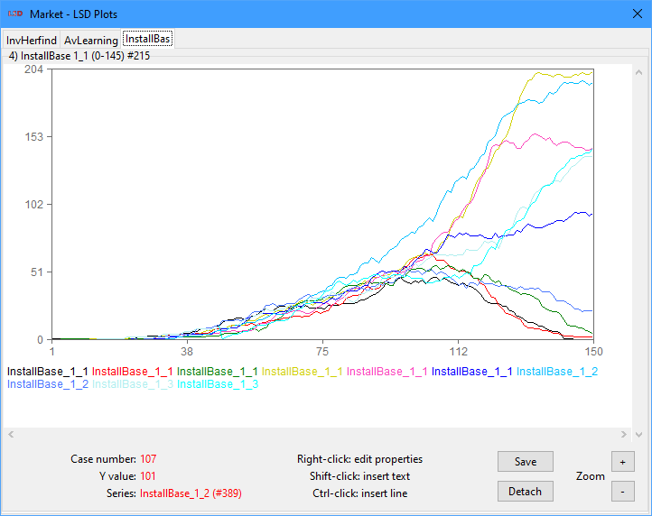
The example above is a typical time series plot showing 10 series associated with Variables, 150 cases starting from 1 to time step 150, a linear primary automatic scale (Y) from 0 to 204, using colors to identify the series, no grid lines, 3 significant digits precision, points of size 1 and lines connecting them, and automatically named after the first series selected. In this example, there are 3 plot tabs available, being the tab showing Variable InstallBase the one in focus.
Tabs on the top of the LSD Plots notebook can be clicked to quickly switch among plots. The notebook can show up to 10 separate tabs at once. Tab names are also truncated to 10 characters. When the number of plots is larger than 10, the tab set will contain just the last 10 plots plus the tab More…. Clicking on More… will open a list of buttons which give access to all plots, attached to the notebook or not, similarly to the Plots list box.
The plot tab/window offers seven command button types, presenting four or two at a time:
· Save: execute the Save Plot command for the current window, saving to file a copy of the current plot in graphical format for later use. See here for details.
· Stop: during the time required to plot complex data, it allows to stop the current plotting job. When there is too much data to be plotted, LSD may take a while to fill the plot window. Whenever this happens, the user has the option to interrupt the process, regaining control to LSD controls. This button is only available when the Watch option is ticked (the default). After the plot is complete, this button changes to Detach or Gnuplot (see below).
· Detach: after the plot is fully draw, this button allows detaching the selected plot tab from the LSD Plots notebook, creating an independent window for it. This option is not available for Gnuplot plots (see alternative below).
· Attach: in a detached plot window, not in the LSD Plots notebook, this button allows attaching the plot back to the notebook. This option is not available for Gnuplot windows (see alternative below).
· Gnuplot: open the current plot using the Gnuplot application. The plot tab is not removed from the LSD Plots notebook. This option is not available for non-Gnuplot plots.
· Zoom + / -: set the zoom level in the current tab or window. This option is not available for lattice plots. Please note that the scroll bars become active when the user zooms in, so the part of the plot being zoomed can be easily controlled. The user can also enlarge or maximize the notebook or independent window to view a larger part of a zoomed plot.
The plot window is sensitive to the mouse position: the bottom-left part of the window presents the case (time step) number (time series) or the series X value (cross-section), the series Y value, and the name of the series (time series only) over which the mouse is positioned. The values shown correspond to the series exactly at the mouse cursor tip, if any. Please note that the case values correspond to the complete number of time steps to the left of the cursor and so always a rounded-down integer.
Plots can be manually improved by the addition of new elements and the modification of the existing ones, by using the right-click context menu on the desired location or the corresponding shortcuts:
· Properties (shortcut: Alt+click): in text elements, to edit the text, font, size, style and color, or in line or pattern elements, to edit the width, color and dash pattern.
· Delete: to delete the element.
· Add Text (shortcut: Shift+click): to create a new text label centered at the mouse position. The new text can have its properties edited using the Properties menu.
· Click and drag with Ctrl pressed: to create a new line from the initial mouse position to the position where the drag ends. The new line can have its properties edited using the Properties menu, including adding arrow heads.
· Click and drag: to adjust the position of existing series labels or added lines around the plot.
The following example shows a fancy two-scale plot in a detached window with added title, arrows, labels and edited, repositioned and recolored series labels.
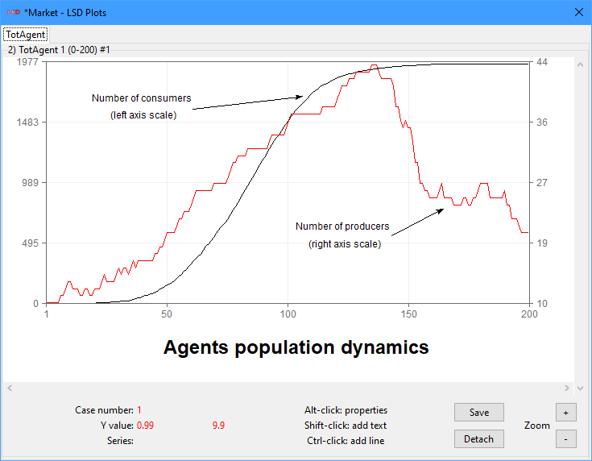
Frequently, during an AR session, the user produces quite many plots, and the computer screen becomes easily crowded. To move among the different plot tabs and windows, four features are available:
· Select plot tab in notebook: plots in notebook can be selected by clicking in the corresponding tab.
· Close plot individual plot windows: plots in detached windows can be closed (click the X on the title bar) and easily reopened later (see below).
· Double click on Plots list box: bring to the foreground and/or reopen any produced plot during the current AR session.
· Double click on a plot: bring the main Analysis of Results windows to the foreground. The user must double click in any empty part of the plot canvas. Sometimes the plot windows have to be moved to allow access to the entire Analysis of Results window.
All the plots produced during an AR session are cataloged in the Plots list box. A double click in any of the list items immediately brings the respective plot tab/window to the foreground, reopening it if needed. A left click on any item in the list removes it. Please note that items in the Plots list box are not saved when the AR window is closed. Only items explicitly saved to file, using the Save Plot and Save Data buttons, are preserved after the AR session is terminated even if the LSD Browser is not closed.
List boxes
List boxes containing LSD time series results and the plot windows history:
· Plots
Series available
This box contains the list of time series available for analysis. The series are identified according to format:
XXXX YY_ZZ (NN - MM)#KK
· XXXX: the name of the Variable or Parameter associated with the time series.
· YY_ZZ: a multi-level index to distinguish among instances of the same Variable or Parameter contained in different Object instances of the model structure tree. The index contains as many elements, separated by underscores (“_”), as the tree level (depth) of the Object containing the element.
· (NN – MM): the first (NN) and the last (MM) simulation time steps for which the data is available in the time series. Data is available only during the time the container Object existed, or from 0/1 to the last time step if Objects are not being added and deleted during the simulation run.
· #KK: a unique serial number the Analysis of Results module attributes to each series for easy identification of the time series.
For example, the item InstallBase 1_11 (30 - 200)#65 represents the time series from a Variable named InstallBase which is located in the eleventh instance of an Object at the second level of the model structure, which, in turn, descends from the first Object instance at the first level of the structure tree (a son of the Root Object). The time series has data from time step 30 until 200, that is, the Object where this Variable is contained was created at time step 30 and lasted up to the 200th step. The time series unique serial number is 65.
The order of the series in the list box reflects the model structure, and therefore elements saved from the same Object type are listed sequentially. For large models it may be useful to filter and/or sort the series presented. The top row of this box is a drop-down selector allowing to choose Variables from specific Objects to be listed. The filter list contains only Objects in the model structure which contain elements with series available for analysis plus entries for series added by the user (created or loaded from file). For series loaded from data files, Object-based filtering is available only if the corresponding configuration file is loaded, otherwise series can be filtered only by the name of the files they came from.
Time series in the list box must be highlighted before they can be added to the Series selected list box. There are several ways to highlighting and add time series. For highlighting:
· Click on any one series to highlight it and unmark any other.
· Click on a series, press and hold the Shift key and click on a second series to highlight all the items between the two.
· Keep the Ctrl key pressed while clicking on different series to add them to the highlighted set without removing any other.
· Click and drag the mouse pointer over a range of time series to highlight them.
· Right click or press space on a series to select a subset of instances of an element, automatically adding them to the Series selected list box.
· Press Ctrl+A to select all series in the current list box.
For adding the highlighted series to the Series selected list box, use the button ►, or press Enter. To quick search the next series starting with a given character simply press the corresponding letter key (case insensitive) or underscore (_).
Clicking with the right button of the mouse while keeping the Shift key pressed opens a window showing the Equation for the associated Variable, if available. This operation has no effect on series associated with Parameters. Clicking with the right button while keeping the Ctrl key pressed opens a window showing the description of the associated Variable or Parameter, if available. These options can be also accessed in the context menu (right click).
Below the list box there is the indicator Series = XX, where XX is the number of time series currently selected.
Series selected
This list box contains the series currently selected for analysis, e.g., to be plotted, saved, get statistics. Series can be added from the Series available list box using, for instance, the button ►.
The entries in the Series selected list box share the same format as in the Series available list box.
Once in the selected list box, series may be removed using the buttons ◄ and Clear. Button ◄ removes from the list all the highlighted series, if any. The highlighting and quick-searching techniques in the Series available list box also apply. Button Clear removes all the series in the list box, highlighted or not.
Below the list box there are two indicators: Series = XX and Cases = YY, where XX is the number of time series currently loaded and YY is the total number of time steps included in the data (some series may be shorter).
Plots
The Plots list box shows all plot windows created during the current Analysis of Results session. Each plot window corresponds to one item in the list under the format:
XX) YYYY
· XX: the sequential serial number of the plot windows in the current Analysis of Results session. Every time the Analysis of Results module is (re)started, the numbering is reset (beginning from 1).
· YYYY: the title assigned to the plot by the user. If no title was assigned when the plot window was created, the default title is the identification (see above) of the first series in the Series selected list box.
A double click in any of the list items immediately brings the respective plot window to the foreground, reopening it if needed. Plots created with Gnuplot are also reported in the list box and are also reopened when requested. To quick jump to a plot simply type the corresponding first number key.
Plot items may be removed from the list either clicking on it with the right button, or highlighting it and pressing the Delete key.
Please note that items in the Plots list box are not saved when the AR window is closed. Only items explicitly saved to file, using the Save Plot and Save Data buttons, are preserved after the AR session is terminated (even if the LSD Browser is not closed).
Series selection buttons
Tools to select time series results in the Series available list box and add them to the Series selected list box.
· ► button
· ◄ button
· Find
· Add
· Clear
► button
Shortcut: Enter.
Add the currently highlighted time series in the Series available list, if any, to the Series selected box.
◄ button
Shortcut: Backspace.
Remove the currently highlighted time series in the Series selected list box, if any.
Sort buttons
When an AR session begins, the items in the Series available list box are sorted according to the position of the Object instance containing the associated Variables and Parameters in the model structure, starting from the highest level Objects. If the simulation results contain many elements saved, it is convenient to sort the entries in the Series available list box for easier access to the desired series. Also, when there are many instances (copies) of the same element, it may be useful to list together all the series of elements of the same type.
There are four options to modify the order in which entries are organized in the Series available list box:
· Sort▲ (shortcut: Ctrl+S): sort the series according to names alphabetical order and to increasing instance index.
· Sort▼ (shortcut: Ctrl+O): sort the series according to names inverse alphabetical order and to decreasing instance index.
· Sort+ (shortcut: Ctrl+R): sort the series according to, firstly, names alphabetical order, then, secondly, to the last time step (MM here), when the Object containing the element has been removed to the model structure, and, finally, to the initial time step (NN here), when the element-containing Object was added. If Objects have not been added or removed during the simulation run, this option behaves as Sort▲, above. If Objects have been removed, it sorts sequentially the series with the same names placing first the series from Objects still existing at the simulation end or the time it was interrupted or paused, if any.
· Unsort (shortcut: Ctrl+U): restore the original order of the list entries, according to the series serial numbers (KK here).
· shortcut: Ctrl+I: invert the order of the series in the Series Selected list box. There is no corresponding button for this option.
Sorting can be used together with filtering, by selecting, first, a subset of the available series to be presented in the Series available list box, and then, second, choosing the desired ordering option. Every time a new filtering subset is selected, series are organized back to their initial (Unsort) order.
Find
Shortcut: Ctrl+F.
Find the first occurrence of a series in the Series available list box, asking for the name of the desired time series, or just part of it (see example below). If found, the corresponding series entry is highlighted. Search is performed first for an exact match. If no series matches exactly, a new (case sensitive) search is done for the entered text as part of the name of one or more series. If none is found, it relaxes the requirement for case sensitivity. In any scenario, if more than one series matches the search criteria, the first instance found is selected in the Series available list box.
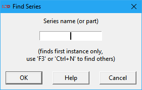
If more instances are to be found, user may press one the F3 or Ctrl+N keys repeatedly. The search is always performed among all the available series irrespective of the series shown in the Series available list box. If the found series is not in the current filtered subset, the filter is automatically updated to the Object containing the series.
Add
Shortcut: Ctrl+Shift+A.
Add more time series for analysis, created from elaborations of the current series or from previously saved LSD results files.
If there are no series in the Series selected list box, because no results from a previously run simulation are available, two options are offered by the following dialog box.
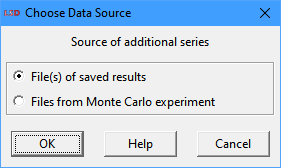
· File(s) of saved results: load time series from one or more LSD results files (.res[.gz] extension only). Use the Ctrl or the Shift keys to select multiple individual or a range of files, respectively. The loaded series will be marked by an F_n signature at the beginning of the variable tag, where n is the file index number (see the Log window for the associated file signature).
· Files from Monte Carlo experiment: load multiple time series from a set of LSD results files (.res[.gz] extension only) produced from a single configuration set for multiple simulation runs. This is usually performed on simulation models containing stochastic components which require a Monte Carlo (MC) experiment to properly evaluate the model results. A MC experiment is usually composed by many simulation runs which require data consolidation to be analyzed. Use the Ctrl or the Shift keys to select multiple individual or a range of files, respectively. The consolidated series will be marked by a MC signature at the beginning of the variable tag and can be subset by MC-specific filtering targets. MC automatic data consolidation can only be performed when all results files have exactly the same elements saved, for the same number of cases (time steps). If data from elements in randomly-created Objects is present, LSD cannot automatically consolidate the data using this option.
When Files from Monte Carlo experiment is selected, LSD offers different consolidation options in the following dialog.
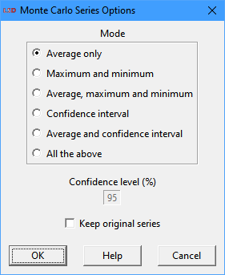
· Average only: each series in the results files will be averaged among every simulation time step, producing the MC mean series for all saved elements (no suffix, uses parent information for filtering, if configuration is loaded).
· Maximum and minimum: for each series in the results files two new time series are created, containing the absolute maximum and minimum values of every simulation time step (_max and _min suffixes).
· Averages, maximum and minimum: for each series in the results files three new time series are created, containing the MC mean and the absolute maximum and minimum values of every simulation time step step (_avg, _max and _min suffixes).
· Confidence interval: for each series in the results files two new time series are created, containing the upper and lower values of the confidence interval of the MC mean for every simulation time step (_ci+ and _ci- suffixes).
· Averages and confidence interval: for each series in the results files three new time series are created, containing the MC mean and the upper and lower values of its confidence interval for every simulation time step (_avg, _ci+ and _ci- suffixes).
· All the above: for each series in the results files five new time series are created, containing the MC mean, the absolute maximum and minimum values, and the upper and lower values of its confidence interval for every simulation time step (_avg, _max, _min, _ci+ and _ci- suffixes).
When the confidence interval is being created, there is an option to change the default Confidence level from 95% (integer values from 80 to 99% are accepted). Also, there is an option to Keep original series from the MC experiment files available for the analysis, as by default they are not kept after data consolidation.
If there are series available when clicking the Add… button, the user may choose between the options in the dialog box below.
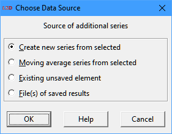
· Create new series from selected (shortcut: Ctrl+W): generate one new time series from computations on the set of entries in the Series selected list box, like the average, maximum, variance, etc. See details below.
· Moving average series from selected (shortcut: Ctrl+M): produce a new set of time series containing the moving average of the set of entries in the Series selected list box. See the details below.
· Existing unsaved element (shortcut: Ctrl+B): include the values from elements not marked for saving but still in the computer memory. This includes Parameters (single last values) and Variables (last and configured lagged values). All values are presented at the time of the last update/computation. Not changed Parameters are presented at time 0 (zero), which requires the explicit selection of the case (0) to be shown. Single period elements are plotted as points, adjusting the point size/type may be necessary for proper visualization.
· File(s) of saved results: load time series from one or more LSD results files (.res[.gz] extension only). Use the Ctrl or the Shift keys to select multiple individual or a range of files, respectively. The loaded series will be marked by an F_n signature at the beginning of the variable tag, where n is the file index number (see the Log window for the associated file signature).
If Create new series from selected is chosen, the user has several choices on how to generate the new series:
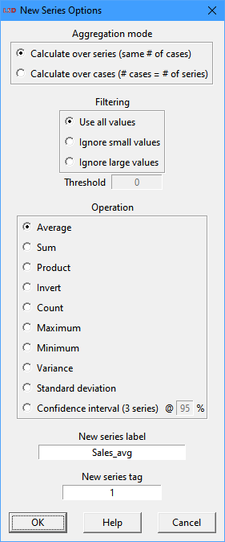
The selected series can be aggregated along two dimensions:
· Calculate over series: the new series will have as many time steps as the selected ones. Each time step value for the new series is computed elaborating over the same time step values of the selected ones. For example, when choosing Average each time step in the new series value will be computed as the average of the values of each series for that time step, according to the entries in the Series selected list box.
· Calculate over cases: the new series will have as many time steps as the number of series selected. Each time step value for the new series is computed elaborating over the values for each of the series selected across all their time steps. For example, when choosing Average each time step t in the new series value will be computed as the average value of the series number t over all the time steps chosen, according to the order in the Series selected list box.
The new series can be computed as the average, sum, product, inverse (1/x), count, maximum, minimum, variance, standard deviation and confidence interval (at the specified confidence level) of the series. Select the desired type accordingly.
The Count option produces a maximum value equal to the number of series if all series have values for all the time steps. Series which do not have values for a certain period are not considered in the counting for this period.
The Confidence interval option produces three series: the average (same as selecting Average), and the confidence interval upper and lower bounds. This way, the confidence interval for a multi-realization variable can be conveniently plotted by selecting the three generated series. The user can select the desired confidence level in the range from 80% to 99% (integer values only), entering the value in the entry box @.
It is possible to filter away data during the new series calculations by ignoring values below or above a specified threshold. If options Ignore small values or Ignore large values are selected, the field Threshold must be filled properly.
The user may specify a label and an index tag or accept the proposed default. These values will be used to name the new series entry in the Series available list box, plus a fixed suffix according to the selected operation (_avg, _sum, _prd, _inv, _num, _max, _min, _var, _sd, _ci+, _ci-). Created series always have the C_ tag prefix.
If Create new series from selected is chosen, the user can select which type of time series is generated:
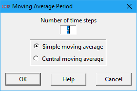
· Simple moving average: use the arithmetic average of the defined past period (t, t - 1,…, t - (p – 1), p is the selected period) to define every time step of each time series being created (one for each of the series in the Series selected list box). By construction, the created time series are back-shifted in time with regards to the original series.
· Central moving average: use the arithmetic average of the currently centered period (t - (p - 1)/2,…, t,…, t - (p - 1)/2, p is the selected odd period) to define every time step of each time series being created (one for each of the series in the Series selected list box). By construction, the created time series are aligned in time with regards to the original series. However, it requires an odd number of periods to be calculated and may produce artifacts on some series with a strong trend.
The names of the new series entries in the Series available list box are automatically generated, adding the suffixes _smaN or _cmaN to the original names for simple or central moving averages, respectively (N is the employed moving average period). Created series have the C_ tag prefix.
Clear
Shortcut: Ctrl+C.
Removes all the series from the Series selected list box. It is equivalent to highlighting all labels in the list and pressing button ◄. It does not affect any of the already created plot windows.
Select instances
Shortcut: Space or right click on the desired entry.
Select a group of time series instances sharing the same name as the highlighted series in Series available and Series selected list boxes, allowing yet filtering these according to their instance indexes. This command is helpful when the user needs to operate on many series with the same name.
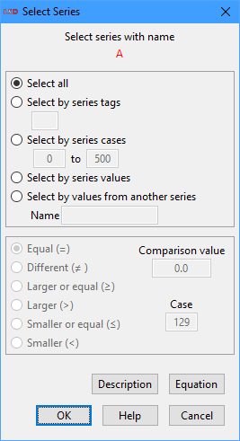
There are five possible criteria for selecting the time series:
· Select all: select all the series with the same name, irrespective of the Object where the corresponding element is contained.
· Select by series tags: series are selected according to specified tag, composed by as many index fields as the position in the model structure of the Object type containing the respective element. In the example above, the Variable InstallBase is contained in an Object in the second level of the structure tree, and therefore two indexes are required to indicate the exact instance: one index for the first level of Objects/instances and one for the second (the Root level is not used because it always has only one copy). Filling all the index fields will select one exact specific instance. Filling just some index fields will select all the series respecting the conditions specified.
· Select by series cases: select series according to their initial and final cases (time steps). Only series starting at or later and finishing at or earlier the specified values will be selected.
· Select by series values: select series according to their value at the specified Case (time step). The user must specify a logical criterion and a Comparison value to define the series to be selected.
· Select by values from another series: select the series in respect to the values of another series at a given time step (Case). The user must also indicate the name of the other series (Label), a logical criterion, and the Comparison value to be used.
Additionally, this dialog box offers buttons for accessing the Equation code, for Variables, and the textual description, if available. There are also mouse shortcuts for these commands: Ctrl+Right Button (Equation) and Shift+Right Button (Description).
Data selection options
Options to select how data from the time series in the Series selected list box should be handled and presented.
· Use all cases / From case / to case
· Y self-scaling / Min. Y / Max. Y
· Y2 Axis / First series in Y2 axis
Use all cases / From case / to case
The Use all cases option sets commands (e.g., Plot, Statistics, Save Data, Show Data) to use all the available cases (time steps) . Set this option off to apply the commands to a subset of the cases available. By default, initial values (time step zero) are not shown, please select case 0 explicitly if required. Further lags of initial values (t = -1, -2, …) cannot be used.
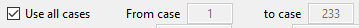
When the Use all cases option is off, two fields are available to specify the initial (From case) and the last (to case) time steps to use.
Y self-scaling / Min. Y / Max. Y
If the Y self-scaling option is checked, the plots will automatically determine the minimum and maximum values to the vertical axis (Y) according to the data in all the series in the Series selected list box. If the maximum or minimum values in the selected series are in different orders of magnitude, setting this option off may be desirable.
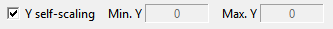
To manually set the maximum and minimum values of the vertical axis (Y), uncheck this option to make the fields Min. Y and Max. Y available for editing.
Series in logs
Check the Series in logs option to use the log values of the time series in the Series selected list box when evaluating most commands (Plot, Statistics, Histogram, and Lattice). In effect, plotting with this option checked turns the vertical axis (Y and Y2, if applicable) to log scale. The natural logarithm (base e) is used. Please note that, when this option is on, negative or zero values are discarded from plots and statistics, and are indicated as NAN (not a number) on data. It does not affect data exported (Save Data command).
Y2 axis / First series in Y2 axis
Check the Y2 axis option to enable the secondary vertical axis scale (Y2) when plotting time series on the right side of the plot window. In this case, some of the series in the Series selected list box will be plotted along the primary vertical scale (Y), while others (see next) will use the secondary one (Y2). This option is ignored for cross-section plots. Y2 always use self-scaling (from series values) but the primary scale (Y) can still be manually set.
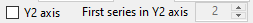
When the Y2 axis option is on, the user must choose a number indicating the first series in the Series selected list box to use the secondary scale using the field First series in Y2 axis. The series are numbered according to their ordinal position in the Series selected list box: the first series is numbered as 1, the second, 2, and so on. All the series after the indicated series will also use the secondary scale. Therefore, the order number must be larger or equal than 2 (at least one series must use the primary scale) and up to the total number of selected series.
Plot format options
The Plot command has several alternatives to present the data in the time series in the Series selected list box.
· Time series or Cross-section
· Title
· Grids
· Watch
· Gnuplot
Time series or Cross-section
This option defines how data from time series in the Series selected list box is used to perform most commands (e.g., Plot, Statistics, Histogram, and Lattice). Data can be handled as the entire (or a range of) time series or for just one (or a few) cross-section time steps. Time series analysis usually compares the properties of two or more series along the same time period while cross-section analysis focus on comparing data from different model elements at a certain (or a small set of) point in time.
If the Time series option is selected, the data time span employed in the analysis is defined by the time steps (cases) range selected, automatically excluding missing values. The analysis considers as data the values produced during a simulation run by one or more selected Variables (or Parameters) across these time steps.
Alternatively, when Cross-section is checked, the user must specify one (or more) time step(s) over which to perform the analysis. Series including missing values at that (those) time step(s) are automatically excluded from the cross-section. In this case, the analysis is performed on a data set given by the values produced during a simulation run for the selected Variables (or Parameters) at that (those) same time step(s).
When using the Plot command, the produced results also depend also on the options Sequence and XY plot (below). See the section below on the possible combinations and their results.
Sequence or XY plot
This option defines the organization of the data set in the plot window, to produce (potentially multiple) plots of a sequence of values, or to represent it as a XY map.
The Sequence option considers each time series in the Series selected list box as an independent data set to be plot over a common “canvas”.
Instead, when XY plot is marked, the first time series is used to define the X axis coordinates of the points to be plotted and the remaining series to define the corresponding Y axis coordinates. If two or more series are selected, each X coordinate (abscissa) will show more than one point (ordinates).
The produced results of the Plot command also depend also on the options Time Series and Cross-section (above). See the section below on the possible combinations and their results.
XY plots can be also generated by Gnuplot, graphical software separated of LSD. Only a few of the Gnuplot options are exploited by LSD. See the instructions on how to use some additional Gnuplot commands.
Plot options combinations
The different combinations of the options Time series / Cross-section and Sequence / XY plot produce alternative plot types:
· Time series & Sequence: standard time series plotting, where the X axis shows the time step (case) of the simulation run and Y, the value(s) of the selected series. Series not defined in some of the selected time steps are truncated as necessary. If the number of time steps is larger than the number of physical pixels on the plot window, multiple points are averaged as required.
· Cross-section & Sequence: the (discrete) X axis contains the series selected and the Y axis, their respective values at the chosen time step(s) of the simulation run. The cross-section cases to use and the order in which the series are ordered can be set as shown below.
·
Time series & XY plot and more than one series selected: the
X axis reports the values from the first series in the Series selected list box. The plot shows a set of points or a line for each subsequent series,
placing a point along the Y axis for each value X from the first series. 3D
plots (on XYZ axis) are also possible, see the details below.
For example, suppose there are three selected series (X1, X2
and X3). The plot will contain two lines (or sets of points) at the
coordinates (X1(t), X2(t)) and (X1(t), X3(t)),
for each time step t included in the selection of cases.
· Time series & XY plot and one single series selected: phase diagram of a series, where the X axis presents the values for the series selected, and the Y axis reports the same series values at a future time step. The user must provide a lag value in terms of the number of lags between future and present time steps. It is possible to add a 45° line to the plot, indicating stable points (where X(t) = X(t + 1)).
· Cross-section & XY plot: scatter plot considering data from a single time step, where the values for the X axis come from a group of the series selected the Y-axis values are defined by the remaining selected series. The user must specify one time step and how many of the initial series in the Series selected list box will provide the values for the X axis. The number of series chosen for the X axis (the number of dependent variables) must be an exact divisor of the remaining number of selected series. See the details on producing scatter plots below.
Cross-section time steps
When the options Cross-section & Sequence are checked, the user must define the cases, i.e., the simulation run time steps, to consider when creating one or more cross-section data sets from the selected time series. This definition is required when using both the Plot and the Statistics commands on a dialog box like this:
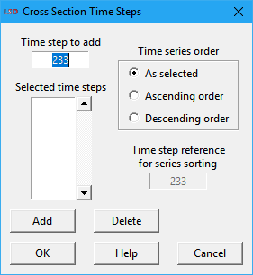
In the Time step to add field the user type the time steps(s) to use. For managing the list of cases, there are two buttons available:
· Add (shortcut: Enter): add the typed case to the list of selected time steps (cases).
· Delete: remove from the list of time steps the element(s) currently highlighted.
By default, the series are ordered in the X axis of the plot in the same order as they are in the Series selected list box. It is possible to change this order according to the series increasing or decreasing values at a certain time step, not necessarily the same as (one of) the cross-section case(s). To do so, the user select among one of the time series order options and define which time step to use as the reference (the default is the last typed cross-section).
Scatter plots
If the options Cross-section & XY plot are checked and the command Plot is used, some specific options are required before a scatter plot can be generated. The scatter plot is built with points generated from data in the selected series at a specific time step (case). LSD extracts from each time series just one value, at the specified time step. A 2D plot is composed by points where the X-axis values come from a set of series (the independent variables) and the Y-axis values are produced by the remaining series (the dependent variables). A 3D plot is made of the X and Y-axis values coming from a set of variables (the independent variables) and the Z-axis values, from the remaining series (the dependent variables) These values are re-arranged to generated 2 or more variables: one or two independent ones (for 2D or 3D plots, respectively), and one or more dependent variables.
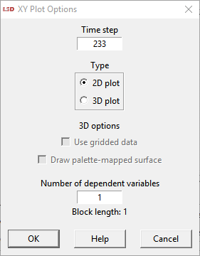
The required options are set using the above dialog:
· Time step: the time step (case) to use from the series selected.
· 2D / 3D: generate the plot in two (XY) or three (XYZ) dimensions.
· Use gridded data: (3D plots only) instead of considering the actual series values, divide the plane of the independent variables in equally spaced squares, grouping the values in each squares. This option is only supported when Gnuplot is enabled (the default).
· Render 3D surface: (3D plots only) replace the points with a palette-mapped, colored 3D surface. Uncheck this option to generate a plot based on lines or points, as set by the options Lines and Points. This option is only supported Gnuplot is selected.
· Number of dependent variables: how many dependent variables should be used in the plot, generating as many point groups (or surfaces) as a function of the number of independent variables. This option is only supported if Gnuplot is checked.
Initially, with Cross-section & XY plot checked, the user selects the number (m) of series that must be considered and click on Plot. Then, in the options dialog (above), the user chooses the cross-section time step, whether the plot will be 2D or 3D, and the number of dependent series (n). The selected series are considered sequentially, according to the order in the Series selected list box. The m series used will be divided in groups of length n+1 or n+2, for 2D or 3D, respectively, each group containing the same number of series. The first group (2D) or the first two groups (3D) will provide the values for the independent variable(s), used for the horizontal X axis or the XY plane. The remaining series will form the dependent variables, appearing on the vertical Y (2D) or Z (3D) axis.
Note that the user picks the number of dependent series (n) and the block length indicator in the dialog presents the resulting block length for the chosen plot type. The number of series (m) and the block length (b2D = m/(n+1) and b3D=m/(n+2)) must be an exact multiple.
For example, suppose you selected m=120 series. If n=2, that is, there are two dependent series to plot, if you choose a 2D plot each variable in the graph will contain 40 points. If you select a 3D graph each variable in the graph will contain 30 points.
In another example, if the Series selected list box contains m=6000 series, the user can choose b2D = 1000, 2000, 3000 as the block length for a 2D plot. If 2000 is chosen and k is the cross-section time step, the Plot command considers the values from the first 2000 series as values defining the X axis, and two other data sets (from the 2001 to 4000, and from 4001 to 6000) that will provide the Y values to plot. The graph will therefore contain two sets of points defined by the 2000 points with coordinates { (X1(k), X2001(k)), (X2(k), X2002(k)), ..., (X2000(k), X4000(k)) } for the first series and { (X1(k), X4001(k)), (X2(k), X4002(k)), ..., (X2000(k), X6000(k)) } for the second.
3D plot options
If the user selects the Time series & XY plot options and there are at least three entries in the Series selected list box, the Plot command will offer the option to produce a 3-dimensional plot. By default, a 3D plot considers the first two series in the list box as the independent variables, plotted on the horizontal XY plane, and the subsequent series, as the dependent variables, plotted on the vertical Z axis. Alternative definitions for the data used for the XY plane are available.
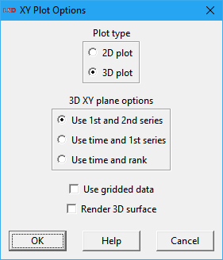
The 3D XY Plot options dialog box is presented above. Initially, the user is requested to choose between a 2D plot, with one independent and multiple dependent variables, or a 3D plot, with one or two independent and one or more dependent variables. For 3D plots, there are three options for the variables defining the XY plane data:
· Use 1st and 2nd series: use the values of the first two time series in the Series selected list box as the independent variables (X and Y dimensions) and the remaining series as dependent variables (Z dimension).
· Use time and 1st series: use the time steps (1, 2,…, T) and values of the first time series in the Series selected list box as the independent variables (X and Y dimensions) and the remaining series as dependent variables (Z dimension).
· Use time and rank: use the time step (1, 2,…, T) and the position of the time series in the Series selected list box values as the independent variables (X and Y dimensions) and the series as dependent variables (Z dimension).
There are some Gnuplot-only 3D options the user may select:
· Use gridded data: instead of considering the actual series values, divide the plane of the independent variables in equally spaced squares, grouping the values in each squares.
· Render 3D surface: replace the points with a palette-mapped, colored 3D surface. Uncheck this option to generate a plot based on lines or points, as set by the options Lines and Points.
When the Gnuplot option is marked, LSD uses the Gnuplot software package (if available in the computer) to generate surface plots, like the one depicted below. Such images can be explored by dragging the mouse with main button pressed.

To save Gnuplot plots to file the user click on the diskette icon in the Gnuplot toolbar. The plot is saved using the enhanced metafile format (.emf). If a different format is required, open the produced file in any graphical software and save the image in your preferred format.
After creation by LSD, Gnuplot plots are presented in a window that can be easily closed at any time by clicking on any button (OK or Cancel) presented in a small dialog box window telling Close Plot X where X is the number of the plot. The user may also click on the X in the title bar to close the Gnuplot window.
When Gnuplot is checked to produce the plot, the default, many additional options become available to customize a 3D plot. See Gnuplot documentation for a comprehensive list. For instance, the commands set xlabel, set ylabel, and set zlabel set the labels for the X, Y and Z axes. Global plot customizations can be set using the Gnuplot>Options menu.
If the user require more sophisticated Gnuplot options, a basic understanding of how LSD generates the plots is required, besides knowledge about Gnuplot itself. When a Gnuplot plot is produced, LSD creates a new subdirectory in the model home directory named plotxy_XX, where XX is the number of the plot in the Plots list box, and stores some files in it. The file named data.gp contains the data used for the plot. Other two files, named gnuplot.gp and gnuplot.lsd, contain the Gnuplot commands to elaborate the plot. Therefore, to modify the 3D plot the following steps are required:
1. Generate the plot with the desired LSD options.
2. Close the created Gnuplot window, taking note of its number (XX) in the Plots list box.
3. In the plotxy_XX subdirectory, open the file gnuplot.gp with a text editor (or LMM).
4. Edit the gnuplot.gp file, adjusting the desired Gnuplot options, and save it.
5. Double-click on the name of the plot in the Plots list box to open the modified plot.
For further information on Gnuplot, including its documentation, an interactive Gnuplot window can be opened using the Gnuplot>Open menu option.
Title
This field allows assigning a title (name) to the plot window. The title is also used in the Plots list box to identify the plot. By default, LSD assigns as the title the very first time series added to the Selected list box from a clear state (no series). If the user later removes this first series, but does not completely clear (empty) the list box, the existing title is not changed.
No colors
If this box is not checked, all the plots created assign different colors to the series or data elements. If the No colors check box is marked, the series or data are plotted using a gray scale, more appropriate for black-and-white printing. Users have also the option to edit line colors directly in the plot window before saving the plot to file. This way the user can also use dash patterns for the plot lines.
Grids
When this option is checked, the plot windows include grid lines dividing the plotting space, both on the vertical and horizontal directions. This allows for more precise evaluation of the data values.
Watch
If this check box is marked, the default, LSD draws the plot windows in an interactive mode, allowing the user to interrupt the drawing process by clicking on the Stop button. If unchecked, the plot is created in background, increasing slightly the drawing speed but preventing the process to be stopped by the user (the Stop button is unavailable). Also, if this option is not marked, the user cannot access other LSD windows during the plot drawing.
The Watch option is relevant only for complex plots, involving many series and/or data points, particularly in slower computers.
Gnuplot
Define the plot window drawing engine to be used for XY plots. Almost all types of plots can be natively handled by LSD, except when involving 3D surfaces or gridded data. However, XY plots produced by the Gnuplot software package are usually nicer, offer more features, and are generally preferred. Accordingly, Gnuplot checked is the default for these cases.
More details about Gnuplot operation in LSD are presented above.
The user has the option to uncheck the Gnuplot option and use LSD internal drawing engine whenever possible. This can be useful, for instance, if the Gnuplot package is not available in the computer.
In macOS, when using Gnuplot, an inactive Terminal window may be left open after the plot window is created (this is the default macOS behavior). To have such inactive windows closed automatically, in the Terminal application choose the menu option Terminal>Preferences>Profiles>Shell, and in the When the shell exits option list, select Close if the shell exited cleanly.
Precision
The field defines how many significant digits, or the precision, should be used to represent the values in the plot window as well in data presented in the Log window. The default is to use 3 significant digits. Any values between 1 and 8 may be selected. This setting does not affect the internal (saved) values for the time series, the data computations, or the values saved to file when using the Save Data command.
Point size
This field determines the size/type of data points or the width of data lines in the plot window, in pixels, according to the Lines and Points option. The default is 1.0 (cross-shaped points). Acceptable values are in the range ]0, 10] for sequence and [1, 10] for XY plots. The final value may be rounded according to the screen resolution and the zoom level.
In sequence plots, Point size values equal or smaller than 2 also change the point representation. When size is smaller than 1, points are represented by 1-pixel dots. Size equal to 1 uses small crosses (“×”) for representation. Sizes in the range ]1, 2] uses plus-signs (“+”) to show points. Sizes larger than 2 are represented by filled circles of the specified size.
Lines or Points
These complementary options allow the user to create line or point plots. When Lines is selected, the default, the data points are connected by lines and not directly represented in the plot. If Points is chosen, a marker is drawn at each point. According to the option, the size or type of the data point markers or the width of the data lines is controlled by the content of Point size field.
Note that for graphs using a large number of values, with more horizontal points than the screen resolution, the lines can be just an approximation of the positions of the actual values.
Command buttons
The main commands available in the Analysis of Results modules are accessed by the button bar.
· Plot
· Lattice
Plot
Shortcut: Ctrl+P.
The Plot button creates a new plot tab presenting the data from the series listed in Series selected list box according to the chosen data selection options and plot format options. Several plot type can be generated using different combinations of those options, as explained above.
All the plots produced with the Plot command are cataloged in the Plots list box. A double click in any of the list items immediately brings the respective plot window to the foreground, reopening it if needed.
Save Plot
Shortcut: Ctrl+V.
The Save Plot button saves the plot in an existing plot window to a graphical file. The plot to be saved must have been already created using the Plot command and be listed in the Plots list box. If the plot is not already highlighted in the Plots list box, a dialog box asks the user to select one before proceeding. This command is equivalent to pressing the button Save in the corresponding plot window.
Before the plot is saved to file, the user must confirm or change the plot settings in the Save Plot dialog box, as in the example below.
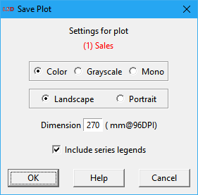
The following options are available:
· SVG / Postscript: define the file format between two options: Scalable Vector Graphics (SVG), the default, or Encapsulated Postscript (EPS). SVG format (.svg extension) is a standard internet format accepted by most modern software. EPS format (.eps extension) is an older format, accepted by a more limited number of software packages.
· Color / Grayscale / Mono: selected to save a color, grayscale or black and white image.
· Landscape / Portrait: choose to save the image in horizontal or vertical orientation, respectively. This option is only available when the Encapsulated Postscript (EPS) format is selected (see above).
· Dimension: define the width (in millimeters) of the picture assuming a 96 DPI (dots per inch) resolution for the output device. Default is 270 mm. Higher resolution devices will show an image proportionally smaller. This option is only available when the Encapsulated Postscript (EPS) format is selected (see above).
· Include series legends: include in the image the legends (names) of the series in the plot. Uncheck this option to be able to add the legends later.
After confirming the plot image settings (press OK), LSD requests the disk directory and the file name to be used.
The image file is always saved in high quality, vector-based formats which are accepted by most text and image software packages, like LaTex, OpenOffice, Microsoft Office (SVG only), Chrome, Firefox, etc. Format conversion to raster-based formats, like JPEG or PNG, should be avoided. When format conversion is needed, the use of an external utility is necessary. For basic needs, there are many websites offering conversion from SVG and EPS to any format. For advanced conversion controls, there are free tools like Inkscape.
Save Data
Shortcut: Ctrl+E.
This command saves the time series values for the entries in the Series selected list box to a file. The time steps to be included in the data file are defined by the cases selection option. Data can be saved in two formats, to be chosen using the dialog box presented when the Save Data button is pressed.
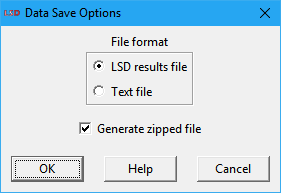
Options available:
· LSD results files: LSD internal format (.lsd[.gz] extension) that can be reloaded in a new session of Analysis of Results module. Other packages, like R, may be also able to directly read LSD results files, which contain additional information to the time series data.
· Text file: generic text file (.txt[.gz] extension) containing time series organized as a table made of columns with one series each and rows for the included time steps (cases) range. Many options are available for fine tuning the file format, see below.
· Generate zipped files: mark to produce gzip compressed files (.gz extension), potentially saving significant disk space. This is the default configuration. Text-format compressed files may require decompressing before usage with most software applications, so the user may prefer to directly produce uncompressed files unchecking this option. This is not recommended for LSD-format files, however, because they can be directly read in gzip format by LSD and R, without decompression, speeding up data reading.
When text-format files are selected, a second dialog box with additional options is presented:
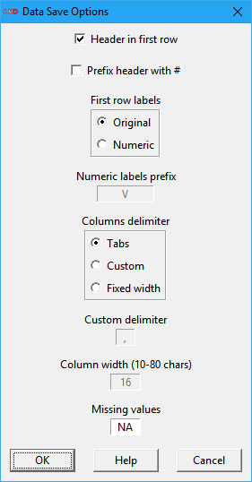
The offered options are:
· Header in first row: if marked, the default, the file includes the series labels in the first row. Uncheck when generating files for packages which do not accept labels mixed with data.
· Prefix header with #: if checked, add the “#” character to the first column of the header row, if enabled. For many packages lines starting with this character are considered as comments and discarded (e.g., Gnuplot).
· First row labels (Original / Numeric): if the option Original is marked, the default, the headers will use the same names attributed to the series plus the instance indexes, separated by the underscore (“_”) character to prevent spaces in the column names. This option may cause problems with packages limiting long names for the imported variables (e.g., SPSS use only up to 8 characters for imported variable names). The option Numeric allows users to reassign the series names using a progressive number, prefixed by one or more alphabetic characters (see next option), to distinguish between data columns in the file.
· Numerical labels prefix: (only available if Numeric option is checked) Defines the prefix to be used when reassigning the series names to numbers. For example, if the field is set to “V”, the default, the data file columns are named V1, V2, V3, …
· Columns delimiter (Tabs / Custom / Fixed width): set how data file columns are separated. The default option uses Tabs (tabulation characters) to delimit columns, which are accepted by many software packages. The Custom option allows specifying any column-delimiter, like commas, semicolons, spaces etc. (see the Custom delimiter option below), and providing support for importing the file in virtually any package. The Fixed width option creates fixed-width columns, where each column contains exactly the same number of characters (see the Column width option below).
· Custom delimiter: (only available if Custom is checked) define the desired character(s) to delimit data columns.
· Column width: (only available if Fixed width is checked) set the width of every data column in the file. Default width is 16 characters, the minimum is 10, and the maximum, 80. If elements are shorter than the specified width, labels are padded with spaces and numbers are filled with trailing zeros. If longer, they are truncated.
· Missing values: specify the characters to use to indicate missing values in data. The default is NA (not available) the default for R. Must match the same convention used by the software package reading the data file to prevent data mismatch.
After confirming the options (press OK), LSD requests the subdirectory and the file name to be used. The data file is saved in the requested format, compressed or not.
Show Data
Shortcut: Ctrl+D.
This command shows the time series values for the entries in the Series selected list box to the Log window. The data comprises the time steps defined by the cases selection option. The data is organized in columns with headers indicating the names of the series.
It is recommended to avoid showing many long time series at once, as this may require a significant time to print all the data in the Log window.
Statistics
Shortcut: Ctrl+T.
This command computes a few descriptive statistics on the time series in the Series selected list box and present them in the Log window. If Time series is checked, the time steps to be considered in the computation are defined by the cases selection option. Alternatively, when Cross-section is selected, the computation is performed across the time series using the time steps chosen by the user as cross-section(s). If the Series in logs option is set, the natural logarithm of the time series data is used for computation.
The provided statistics are: average, standard deviation, variance, absolute minimum and maximum. The statistics are reported as one line for each time series, informing also the name, instance index and the number of cases considered. The header indicates the total number of cases considered.
Histogram
This command creates a histogram, presented in a plot window, from the series in the Series selected list box. If Time series is checked, a single time series should be included in the selection list and the time steps to be considered in the histogram are defined by the cases selection option. Conversely, when Cross-section is selected, the histogram is calculated across two or more of the selected series using a single time step chosen by the user as a cross-section. If the Series in logs option is set, the natural logarithm of the time series data is used for computation.
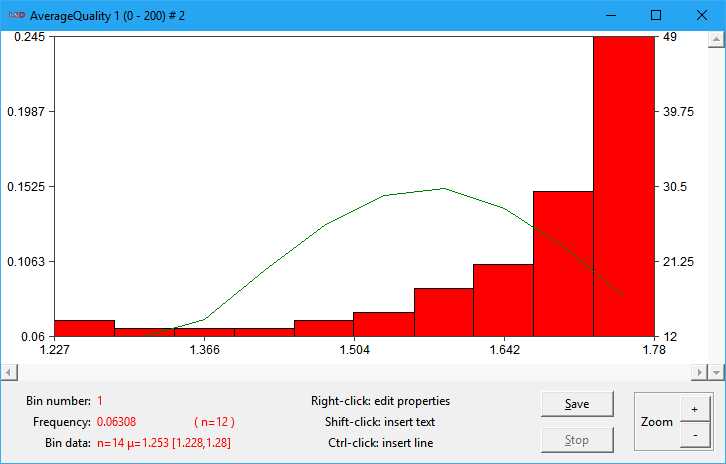
Above, a sample histogram plot is shown. The bars represent the classes or bins grouping the data according to their values, as indicated in the horizontal (X) axis. The bar heights, measured by the vertical axes, represent the frequency (left) and number (right) of data values in each bin range. The plot also includes the normal distribution fitting (the green line) for the data statistical moments (indeed, a very bad fit in this example).
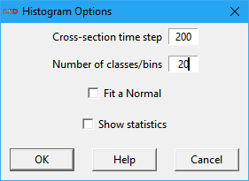
There are three or four options in the histogram dialog box:
· Cross-section time step: (only available if Cross-section is checked) the time step (case) to create the data cross-section used in the histogram. The default is the last time step computed (so far).
· Number of classes/bins: number of equal-width bars in which the data frequencies is organized. The bars represent classes or bins the data is organize. Each class groups a range of values of equal width. The group boundaries are automatically calculated based on the data.
· Fit a normal: if checked, estimate a normal distribution fit for the data and add it to the plot window.
· Show statistics: if marked, print in the Log window the list of groups/bins created, indicated their boundaries, center, average, minimum and maximum in data, and number of data points.
Lattice
Shortcut: Ctrl+L.
This command creates a 2-dimensional lattice plot window where each square is colored according to the values of an n×m data matrix build from the series in the Series selected list box. The data values must be positive values, including 0, in which just the integer part is considered. If the Series in logs option is set, the natural logarithm of the time series data is used for computation and 0 is not a valid data value).
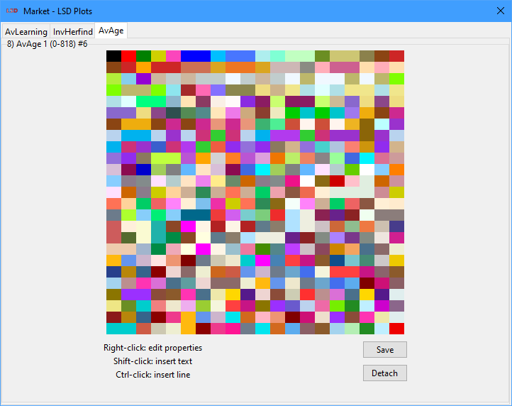
The example above presents a 25×20 lattice (25 rows and 20 columns) sample. The quick color change all over the plot indicates an almost random pattern of change in the data values. Lattice tab or window has two buttons (Save and Detach/Attach), common to all plots.
If Time series is checked, a single time series should be included in the selection list and the time steps to be included in the lattice matrix are defined by the cases selection option. The time series values are split in the selected Number of data columns (the m dimension, see below) and used to build the lattice matrix data rows (the n dimension). Conversely, when Cross-section is selected, the lattice matrix is constructed across two or more of the selected series using the chosen Cross-section time step. The resulting cross-section data values are split into the m columns and n rows of the lattice matrix.
For instance, the cross-section lattice options dialog box is presented below (the times series version omits the first field).
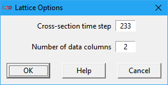
· Cross-section time step: (only available if Cross-section is checked) the time step (case) to create the data cross-section used to form the lattice matrix. The default is the last time step computed (so far).
· Number of data columns: the number of columns the lattice, used as the width of each data row when splitting the selected time series or cross-section. This number must be an exact divisor of the data length (number of cases/steps for a time series or number of series for a cross-section). The default value suggests the closest possible square lattice.
If the number of columns is not an exact divisor of the data length, the command is aborted with an error message. If using a time series as the data source, change the number of columns or the number of time steps (cases) used. If plotting a cross-section, adjust the number of columns or add or remove series to the Series selected list box.
Menu
The Analysis of Results module menu offers additional functionalities not directly available in the main interface.
· Exit
· Gnuplot
· Options
· Help
Exit
Shortcuts: Esc or click the X on the title bar.
Exit the Analysis of Result module and return to the LSD Browser window or to the Debugger window, whichever launched the module. All non-saved items in the Plots list box are lost when the Analysis of Results is closed. Only items explicitly saved to file, using the Save Plot and Save Data buttons, are preserved after the Analysis of Results session is terminated (even if the LSD Browser is not closed).
Gnuplot
The Gnuplot submenu deals with commands involving the Gnuplot package. The submenu option Open launches the Gnuplot interactive window (usually not required for basic usage). The submenu entry Options allows changing the specific settings used by LSD when plotting with Gnuplot. See below the details on the two entries.
Gnuplot is a free, powerful, and flexible tool for creating graphical representations of numerical data. Gnuplot is available for installation in any platform (see http://www.gnuplot.info). It is included in many Linux distributions and is easily installed in all. Windows and macOS users must install Gnuplot (see the Readme.txt file, in the LSD installation directory for details).
Gnuplot>Open
Shortcut: Ctrl+G.
Launch the main Gnuplot interactive window but do not pass any LSD data to it. The Gnuplot interactive interface may be used to operate on a text data file created with the Save Data button. Please use the Prefix header with # option when saving data for use in Gnuplot.
LSD uses Gnuplot by default when creating XY plots so the user does not need to invoke this option for this purpose. For details on using Gnuplot directly from LSD, please refer to the Gnuplot checkbox above.
Gnuplot offers a wide set of options of which LSD exploits only a small subset. Users willing to create sophisticated plots, can save the necessary data, using the Save Data button, select command Gnuplot>Open to open Gnuplot, and exploit all the package possibilities (see the Gnuplot extensive menu help or type help and Enter in the command line).
Gnuplot>Options
Show current or set customized options to be used by LSD when creating XY plots using Gnuplot.
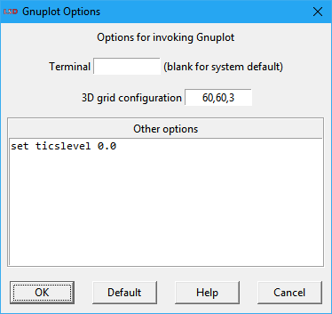
· System terminal: the operating system terminal used to launch Gnuplot. This configuration comes from the LMM settings (menu File>Options) and is normally set automatically.
· Plot terminal: select the appropriate terminal to execute Gnuplot. LSD normally recognizes the operating system in use and set the value for this field accordingly. The default option (blank) uses the default terminal configured in Gnuplot. There may be different terminal alternatives, according to the operating system and gnuplot versions. Recent versions of Gnuplot for Windows can use a wxt or qt terminal for improved options (old versions use the windows terminal). Linux traditionally used x11, but more recent distributions may use qt or wxt, which provides more options. Current macOS versions can use qt (preferred) or x11 (if XQuartz is installed). See the Readme.txt file for details on installing Gnuplot on your system.
· 3D grid configuration: set the level of detail (precision) applied by Gnuplot for 3D graphs. For details see the Gnuplot documentation for the dgrid3d command.
· Other options: define commands to be passed to Gnuplot before processing the data produced by LSD. See Gnuplot documentation for the available commands. For instance, the commands set xlabel, set ylabel, and set zlabel set the labels for the X, Y and Z axes.
Clicking the Default button resets all options to the operating system defaults.
Options
This submenu offers many settings for controlling how LSD produces its own plots (Gnuplot options are covered above).
Options>Colors
Show current or set customized colors to be used in new plot windows for the first 20 data series. Click on any of the color bars to modify the corresponding assignment. Only the plots produced after the changes are affected. Changes are stored only during the current Analysis of Results session. Every time a new session is restarted, all colors are assigned to defaults (advanced users may change the defaults permanently in the src/defaults.tcl file).
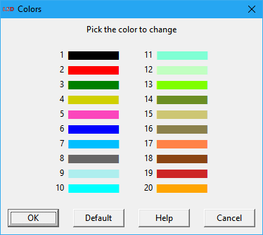
Clicking the Default button resets all colors to the defaults.
Options>Plot parameters
Show current or set customized parameters to be used in new plot windows. Only the plots produced after the changes are affected. Changes are stored only during the current Analysis of Results session. Every time a new session is restarted, all parameters are assigned to defaults (advanced users may change the defaults permanently in the src/defaults.tcl file).
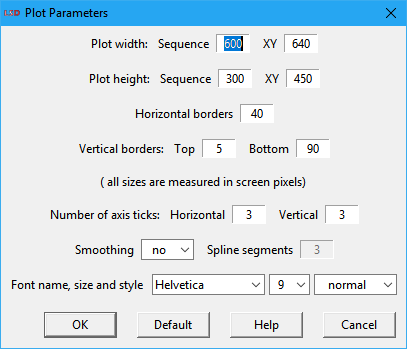
The available options are:
· Plot width: horizontal widths in screen pixels of the plotting area for sequence and XY plots, respectively.
· Plot height: vertical heights in screen pixels of the plotting area for sequence and XY plots, respectively.
· Horizontal borders: width in screen pixels of the horizontal borders on the left and the right (if required) of the plotting area, used to show the vertical (Y/Y2) axis values.
· Vertical borders: heights in screen pixels of the vertical borders on the top and the bottom of the plotting area, respectively. The bottom border contains the horizontal (X) axis values and the data legends.
· Number of axis ticks: number of marks with indicated values on the horizontal (X) and vertical (Y) axes, respectively.
· Smoothing: if selected, use a smoothing algorithm to render the data lines. Two modes are available: yes uses a simpler graphical algorithm, raw employs a spline method. Useful to improve the quality of zoomed images or in case of high definition screens. It will slightly slow down the plot drawing.
· Spline segments: (only available if Smoothing is set to raw) the number of segments to use with the spline smoothing algorithm. Higher values produce smoother curves but demand more processing time.
· Font name, size and style: define the default font attributes used for all plot legends. Font specification can be changed at the individual legend level using the right mouse button on the plot window.
High definition screens may require increasing the size-related values above to produce plot windows of adequate size. In this case, it is recommended to use a common multiplication value to keep the adequate proportions.
Clicking the Default button resets all plot parameters to the defaults.
Options>Lattice parameters
Show current or set customized parameters to be used in new lattice plot windows. Only the lattice plots produced after the changes are affected. Changes are stored only during the current Analysis of Results session. Every time a new session is restarted, all lattice parameters are assigned to defaults (advanced users may change the defaults permanently in the src/defaults.tcl file).
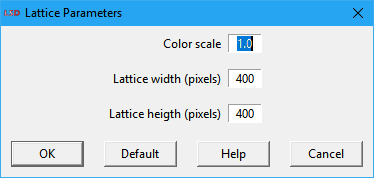
The available options are:
· Color scale: a factor to multiply the data values before associating a color in the lattice plot. It is useful when data values are negative or too small to be used to define lattice colors (defined using the integer part only), e.g., in the 0 to 1 range. The default value (1.0) is to apply no scaling to data values.
· Lattice width: horizontal widths in screen pixels of the lattice plotting area.
· Lattice height: vertical height in screen pixels of the lattice plotting area.
Clicking the Default button resets all lattice parameters to the defaults.
Options>Average Y values
When enabled, the default, this toggle option enable the averaging of data values in the Y axis when there are more data points than the number of visual pixels in the X axis. On special circumstances, the averaging may create graphical glitches and can be turned off. Only the plots produced after changing the option are affected by it. Changes are stored only during the current Analysis of Results session. Every time a new session is restarted, the option is assigned to default (advanced users may change the defaults permanently in the src/defaults.tcl file).
Options>Show Initial Values
When enabled, this toggle option enable the presentation and use of data values related to the initial condition of lagged Variables. For Variables contained in Objects exiting in the beginning of the simulation, this represents the initial values at t = 0. For Variables in Objects created during the simulation, it represents the values at the time t = tc – 1, where tc is the time of creation of the corresponding Object. Initial values are only presented and used if the corresponding case (t = 0 or t = tc – 1, accordingly) or automatic is selected. Please notice this affects also how data is used and produced, for statistics, data export, histograms, lattice etc. Changes are stored only during the current Analysis of Results session. Every time a new session is restarted, the option is assigned to default of initial cases not shown/used (advanced users may change the defaults permanently in the src/defaults.tcl file).
Help
Shortcut: F1.
Menu Help documentation is here. It is shared by all LSD modules.